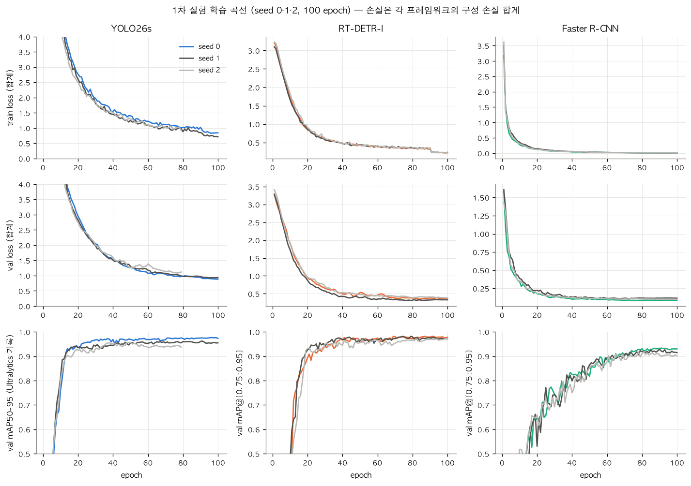

1 / 0
1차 실험
증강·해상도·에폭을 바꿔도 점수는 시드 흔들림 안입니다.
같은 설정도 seed에 따라 0.390~0.410이라 0.02보다 작은 차이는 차이로 보지 않습니다.
손실 곡선도 벌어지지 않아 과적합은 아닙니다.
| YOLO26s 실험 | Kaggle | 판정 (기준 0.410) |
|---|---|---|
| 기준 (100 epoch, seed 0) | 0.410 | — |
| 상하 뒤집기 0.5 | 0.403 | 차이 없음 |
| 해상도 1280 | 0.403 | 차이 없음 |
| 50 epoch | 0.404 | 차이 없음 |
| 30 epoch | 0.380 | 부족 (수렴 전) |
| 20 epoch | 0.325 | 부족 (수렴 전) |
| 라벨 수정 전 | 0.392 | 라벨 정제 효과 +0.018 |

← →/Space 이동 · N 노트 · Esc 목차